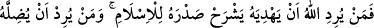
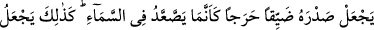
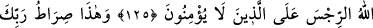
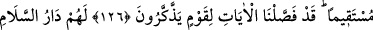
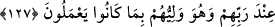

HAK DİN İSLÂM’DIR
125. Allah kimi doğru yola iletmek isterse onun kalbini İslâm’a açar; kimi de
saptırmak isterse göğe çıkıyormuş gibi kalbini iyice daraltır. Allah inanmayanların
üstüne işte böyle murdarlık verir.
126. Bu (din), Rabbinin dosdoğru yoludur. Biz, öğüt alacak bir kavim için âyetleri
ayrıntılı olarak açıkladık.
127. Rableri katında onlara esenlik yurdu (cennet) vardır. Ve yapmakta oldukları
(güzel) işler sebebiyle Allah onların dostudur.
“Allah, kimi doğru yola iletmek,” Hakk’ın yolunu öğretmek ve îmana muvaffak
kılmak “isterse onun göğsünü İslâm’a açar.” Onun göğsünü genişletir ve açar. Bu
ifade, nefsin hakkı kabule istidadlı, hakkın oraya girmesine hazır, onun men ettiklerinden
ve ona ters olan şeylerden arınmış olmasından kinayedir.
Allah, îman etmesini murad ettiği kişinin küfürden uzaklaştıran ve îmana yönelten
sâiklerini güçlendirir. Kalbini îmanın girişine istidadlı, onunla süslenmeye hazır, onun
tersine ve zıddına olan şeylerden arınmış ve uzak hale getirir.
Bu âyet nazil olunca Rasûlullah (s.a.)’e göğsün açılmasının (şerh-i sadr) mahiyeti
soruldu. Şöyle cevap verdiler: “O, Allah’ın mü’minin kalbine bıraktığı bir nurdur ki
onun için göğsü genişler ve açılır.” Ashab: “Onu tanımak için bir belirti var mıdır?”
diye sordular. “Evet vardır. Bunun emaresi, ebedîlik yurduna yönelmek, aldanma
yurdundan uzaklaşmak ve gelip çatmadan önce ölüme hazırlanmaktır.” buyurdu.[164]
Bil ki, ilim iki türlüdür: Muamele ilmi ve mükâşefe ilmi. Birincisi, Allah’a
yaklaştıran ve O’ndan uzaklaştıran şeylerin bilgisidir. İkincisinden önce gelir. İkincisi
ise kalbde zuhûr eden bir nurdur ki onunla gayb âlemi müşahede edilir. Muamele ilmi,
mükaşefe ilmi için şarttır. Allah Teâlâ: “Bizim uğrumuzda cihad edenleri
(çalışanları, mücâhede edenleri) biz, elbette yollarımıza iletiriz.” (el-Ankebût, 29/69)
buyurmuştur. Bu iki ilim birbirinden ayrılmaz. Çünkü yukarıda zikredilen hadis,
muamele ilmi ile ilgili olan ahirete yönelmeyi, dünyayı terketmeyi ve ölüme
hazırlanmayı bu nûrun alameti saymıştır. Mükaşefenin fazileti hakkında Rasûlullah (s.a.)
şöyle buyurmuştur: “Âlimin âbide üstünlüğü, benim ümmetime olan üstülüğüm